Issue 06 · 2026🇮🇹 ITALY
Munasinghe Travel Magazine
ITALY
Venice · Florence · Rome · Naples · Milan · Vatican
★ 6 Cities · 1 Week
🎨 Renaissance + Roman
🍝 Tortellini to Tiramisu
INSIDE: Venice's 400 bridges at sunrise · Florence's Duomo and the Medici · Rome's Colosseum and the Vatican Museums · Pompeii frozen at 79 AD · Milan and Leonardo's Last Supper
Munasinghe Family · Fri 17 Jul — Wed 22 Jul 2026
No. 06 · A Letter from the Road
Welcome to
everything at once.
Italy was the engine of the trip. We had six days, six cities, six wildly different histories, and three children who fell in love with gelato early and never recovered. We crossed the Alps from Slovenia. We arrived in Venice on a hot Friday. By the time we left Naples on the following Wednesday, we had walked through more Roman ruins, more Renaissance frescoes, more medieval churches, and more pasta plates than the rest of the trip combined.
This is the longest issue of the magazine, because Italy refused to be smaller.
You will find inside: the Doge's Palace, the dome of Brunelleschi, the Sistine Chapel, the ruins of Pompeii frozen in 79 AD, and the world's finest pizza arguments. We could not put it all here. We tried.
— The Munasinghes, 2026
In this issue
- Welcome — Everything at Once02
- Venice — A City on the Water03
- Florence — Where the Renaissance Began04
- Rome + Vatican — The Eternal City05
- Tastes of Italy06
- Reflections + What's Next07
COVER STORY · VENICE · SAT 18 JUL 2026
A city built
on water.
Founded fifteen centuries ago by refugees who fled onto the mud islands of a lagoon because no army could reach them. They stayed, drove millions of timber piles into the mud, and built one of the richest cities in history on top of the tide.
Sat 18 Jul 2026Piazza San Marco · Doge's PalaceBus 2 from Mestre · then on foot
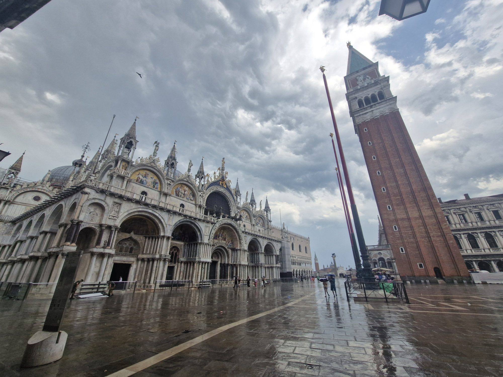
Photo · Munasinghe
Piazza San Marco — the Basilica and the Campanile, the wet stone mirroring a sky just washed by rain. Napoleon called this square "the drawing room of Europe."
We came in from the mainland the simple way — the number 2 bus from Mestre, over the long causeway to Piazzale Roma, and then the city takes over and the cars simply stop. There are no roads in Venice. There are canals, and narrow lanes, and one great square; everything else is water. Vaporetti chug past every few minutes and gondolas slip between them.
No cars. No roads. Just canals, a thousand bridges, and a city that has floated here for 1,500 years.
It was a fierce July day — close and hot even by mid-morning. But we had a plan and a booked ticket: the Doge's Palace at half past ten. What we did not expect was that the palace, and the churches, and one cold drink, would spend the whole day quietly saving us from the heat.
— Issue 06 · VENICE · A City on the Water —
VENICE · PIAZZA SAN MARCO
The drawing room
of Europe.
The only true piazza in Venice — ringed by the Basilica, the bell tower, and the blue-and-gold clock where two bronze Moors have hammered out the hours since 1499.
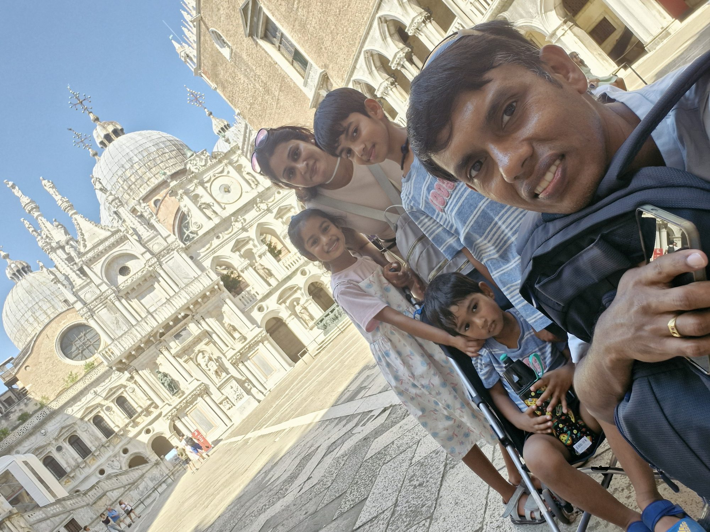
Photo · Munasinghe
All five of us in the square — the golden Basilica on one side, and the Torre dell'Orologio, where the two bronze giants still strike the great bell.
You step out of a shaded lane and the square simply opens — vast, bright, and loud with pigeons and footsteps. The Basilica glitters at one end; the Campanile stands almost 100 metres over everything; the arcades run the length of both long sides.
In July it is also a furnace of pale stone with no shade at all, which is exactly why the Venetians learned, centuries ago, to keep their cool indoors.
— Issue 06 · VENICE · Piazza San Marco —
VENICE · ST MARK'S BASILICA
Gold, and the
bones of a saint.
Built to hold the relics of St Mark, smuggled out of Alexandria in 828 under a cargo of pork so the inspectors would not look. Five domes, and more than 8,000 square metres of gold mosaic inside.
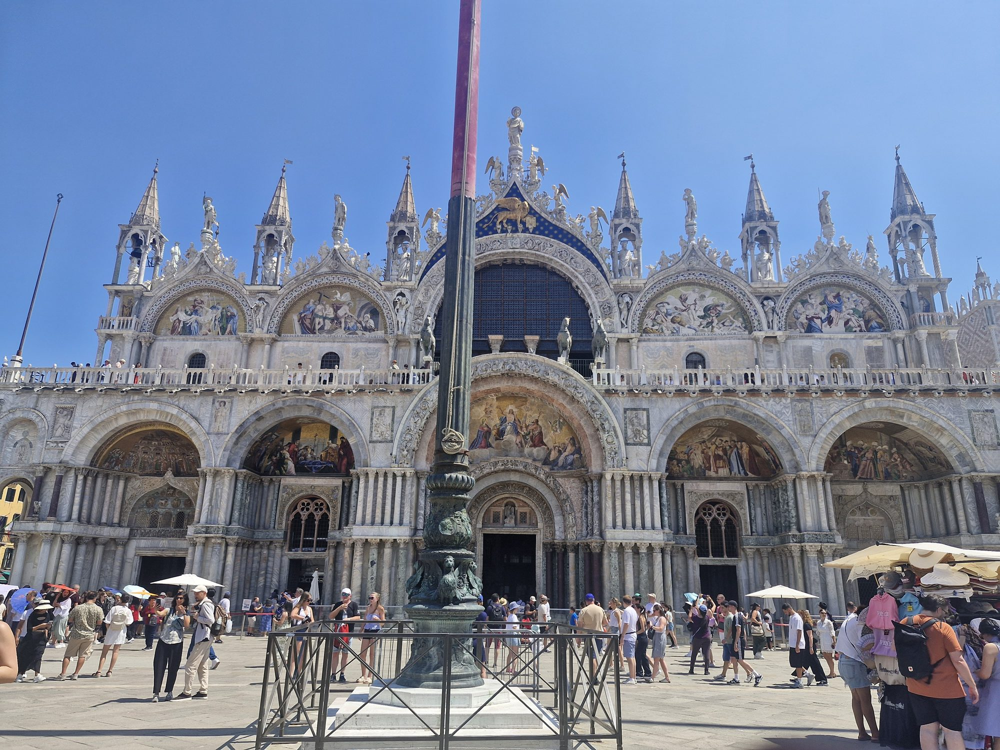
Photo · Munasinghe
The west front — golden mosaics over the five portals, and the four bronze horses on the loggia (copies now; the looted originals are kept safe inside).
By day the Basilica now runs on timed tickets and a long queue that snakes across the square — so we admired the front, the mosaics, the winged lion of St Mark, and left the inside for later.
And later was the better idea. As the light softened we came back for the Saturday evening Mass — free, and entered as worshippers through the little Piazzetta dei Leoni door on the north side. For a Catholic family it was our Sunday Mass, sung under those golden vaults with the low sun in the domes. No ticket, no queue — just the church doing the thing it was built for.
— Issue 06 · VENICE · St Mark's Basilica —
VENICE · INSIDE ST MARK'S
Our Sunday Mass,
under golden vaults.
More than 8,000 square metres of gold mosaic climb the domes of St Mark's — and on the Saturday evening we came back, not as tourists but as worshippers, for the Vigil Mass.
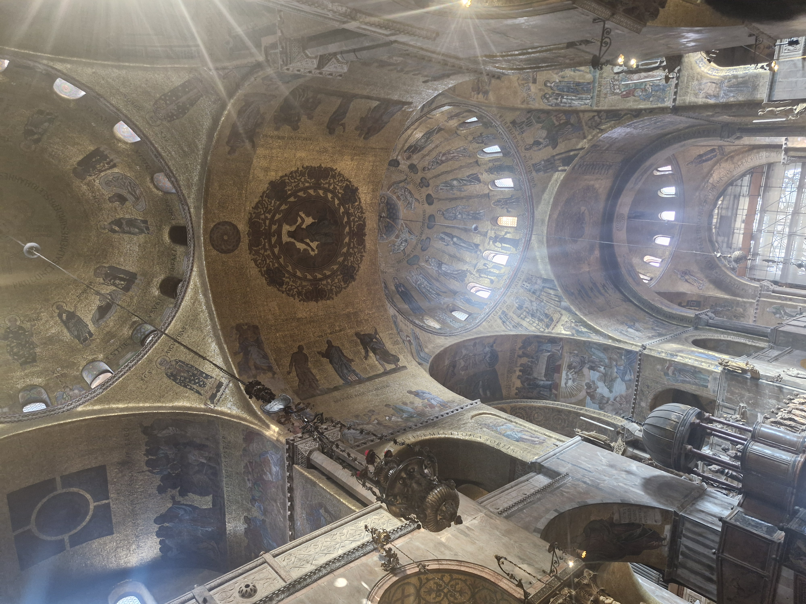
Photo · Munasinghe
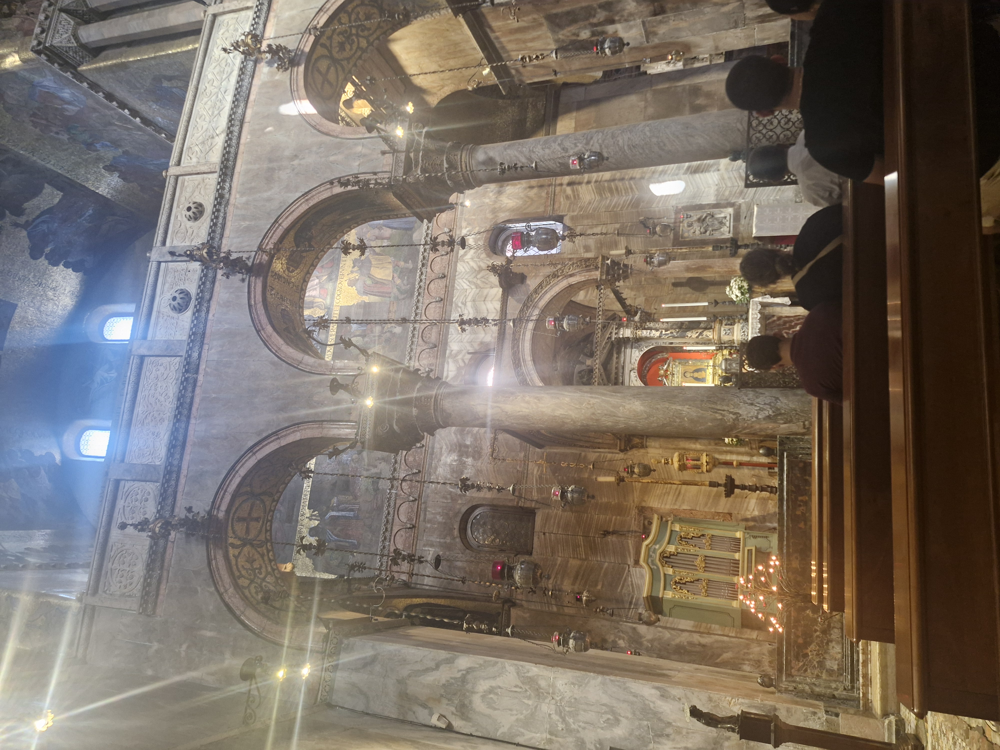
Photo · Munasinghe
Left: the domes of gold glass — the Ascension in the central cupola, lit by shafts of evening light. Right: the marble forest of the nave, every arch above it sheathed in mosaic.
By day the queue for the inside snakes across the square, so we admired the front and left it. But as the light softened we came back through the little Piazzetta dei Leoni door on the north side — free, and entered as worshippers — for the Saturday evening Mass.
No ticket, no queue — just the church doing the thing it was built for, and a family at Mass under a heaven of gold.
For a Catholic family it fulfilled the Sunday obligation, sung beneath eight centuries of gold with the low sun in the domes — and it is the reason the next morning could be given wholly to St Anthony and to Rosa Mistica.
— Issue 06 · VENICE · Inside St Mark's —
VENICE · PALAZZO DUCALE · 10:30
The palace that
cooled the day.
For a thousand years the seat of the Doge and the Venetian Republic — the courtroom, the treasury, and the throne of a sea empire. On a blazing July afternoon, it was also the coolest place in the city.
The Scala d'Oro — the Golden Staircase — its vault crusted in 24-carat gold stucco. Only those whose names were written in the Republic's Book of Gold were allowed to climb it.
We stepped in from the glare and the thick marble simply swallowed the heat. Cool courtyards, cool stone stairs, cool gilded halls one after another — the Republic built for power, and by happy accident for shade.
Venezia is quite hot — but that palace cooled everything down.
Up the Golden Staircase, through the great council chambers, the ceilings drip with gold and the walls are hung with painted glory. It is impossibly grand and, on that day, blessedly cold.
— Issue 06 · VENICE · The Doge's Palace —
VENICE · INSIDE THE PALACE
Ceilings you lie
down to read.
Room after room painted by Veronese and Tintoretto — the Republic hiring its greatest artists to paint its own power onto every wall and ceiling.
Veronese's The Rape of Europa, in the Anticollegio — the waiting room where foreign ambassadors sat before meeting the Doge, surrounded by some of the finest paint in Europe.
The walls here are a who's-who: Veronese's shimmering myths, Tintoretto's Bacchus and Ariadne, and vast votive canvases of doges kneeling before the Virgin and the Cross — the state painting itself as blessed, chosen, eternal.
You crane your neck until it aches. Every gilded frame overhead holds another masterpiece, and the children quickly learn that the best view is with your head tipped all the way back.
— Issue 06 · VENICE · Painted Power —
VENICE · THE PRISONS
Across the
Bridge of Sighs.
The enclosed stone bridge that carried prisoners from the courtroom straight to the cells — named for the last sigh a captive gave at Venice through its little latticed windows.
The New Prisons — damp stone cells behind heavy iron grilles, reached across the covered bridge. Casanova was locked in the cells above the palace, and famously escaped through the roof in 1756.
From the gilded halls the route drops suddenly into the dark. You cross the Bridge of Sighs, glimpse the lagoon once through its stone lattice, and then you are in the cells — cold, low, and heavy with iron.
Prisoners' names and marks are still scratched into the old wood. The children pressed their faces to the grilles and went quiet — the one truly spooky corner of a very grand day.
— Issue 06 · VENICE · The Bridge of Sighs —
VENICE · MUSEO DELL'OPERA
The palace's
first stones.
On the ground floor, out of the sun, stand the original 14th-century carved capitals from the palace's outer loggia — brought inside to save them, and quietly replaced with copies on the arcade above.
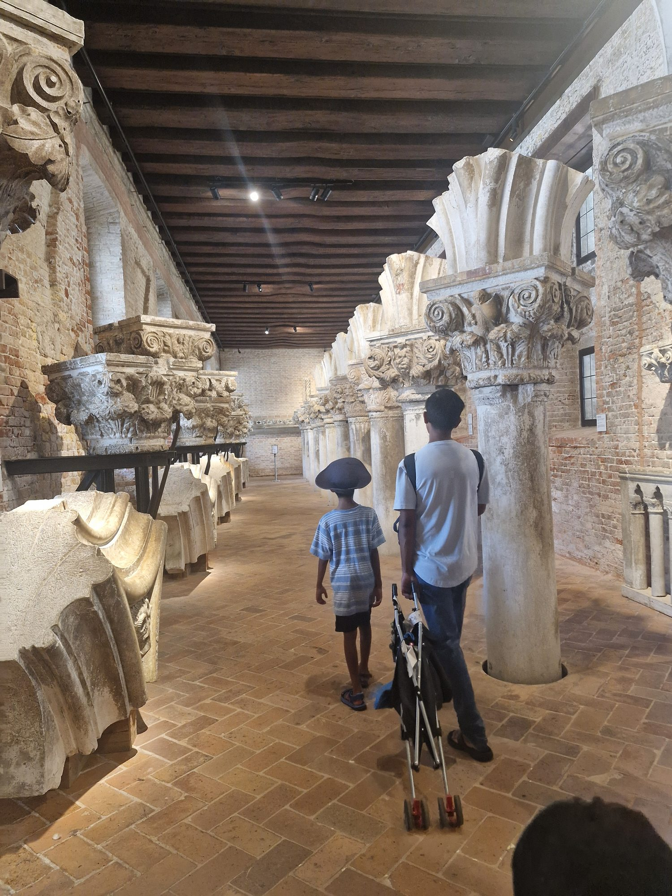
Photo · Munasinghe
Avi and the boys among the palace's original Gothic capitals — each one carved with virtues, seasons, and trades, cool brick underfoot and quiet all around.
It is the sort of room most people hurry past, and we nearly did — but it turned out to be one of the calmest, coolest corners of the whole palace. The capitals are astonishing up close: birds, kings, months, and moral lessons carved in stone six hundred years ago.
Empty pram, small hand held, unhurried footsteps on old brick — a good place to slow down before stepping back into the heat.
— Issue 06 · VENICE · The Original Stones —
VENICE · CHIESA DI SAN ZULIAN
A cool church
on the Merceria.
Halfway along the busy shopping street from San Marco to Rialto, a Sansovino façade and a quiet nave — the second refuge of the day from the heat.
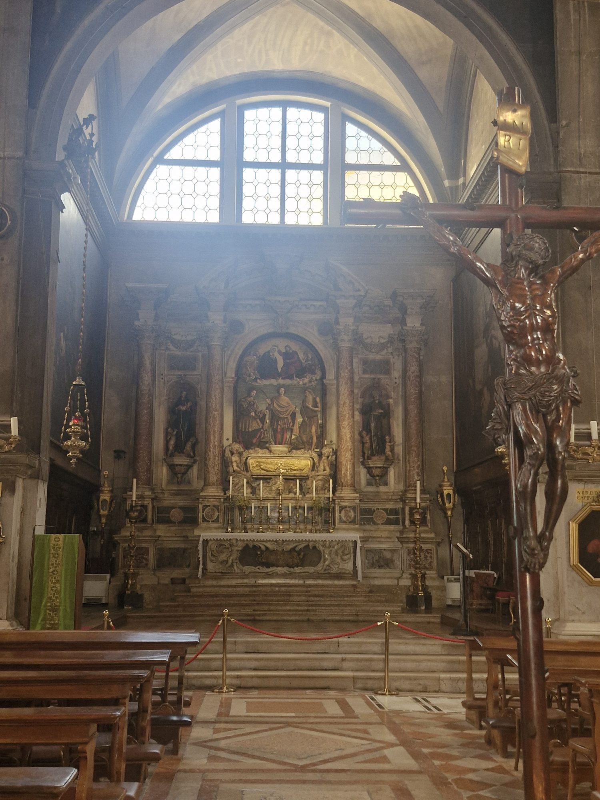
Photo · Munasinghe
Inside San Zulian (San Giuliano) — a Renaissance altarpiece, a gilded reliquary, and a big lunette window pouring cool light onto old marble.
We ducked off the crowded Merceria and pulled open a heavy door, and the noise and heat fell away at once. The front of the church is by Jacopo Sansovino — the same architect who shaped Piazza San Marco — with the bronze figure of the physician Tommaso Rangone set into it.
Inside it was still, shaded, and blessedly cool: paintings by Palma il Giovane overhead, a handful of worshippers, and a family catching its breath before the next stretch of sun.
— Issue 06 · VENICE · San Zulian —
VENICE · THE CANALS
Water where the
streets should be.
Step off the main lanes and Venice becomes green water, arched bridges, striped gondoliers, and the red-and-gold winged lion flying overhead.
Left: a gondola slipping under a little humpback bridge, the winged-lion banner of Venice above. Right: a fridge-magnet Bridge of Sighs, held up in front of the real one.
The gondoliers still wear the striped shirts and still call the corners to one another as they turn. We watched them thread the narrow canals, oars flashing, tourists on every bridge leaning over to take the same photograph.
We did not ride one — but we held up a two-euro magnet against the real Bridge of Sighs and decided that was a souvenir all its own.
— Issue 06 · VENICE · The Canals —
VENICE · KEEPING COOL
Chasing the cool,
all day long.
If Venice in July has a plot, this was ours: hot square, cool palace, cool church, cold drinks — and, at the end, rain.
Cold drinks and air-conditioning at the Hard Rock Cafe — the day's third refuge from the heat, after the palace and the church. Everyone revived.
By mid-afternoon the whole family needed a proper stop, so we found the coldest air-conditioning in the city, ordered a row of iced drinks under the guitars, and simply sat for a while. Bliss.
And then Venice answered the heat itself. The sky went slate-grey, umbrellas bloomed across San Marco, and a summer downpour washed the square clean and cool. When it eased, the stones were mirrors — and the bells were already calling the city to the Saturday evening Mass.
— Issue 06 · VENICE · Keeping Cool —
PADUA · BASILICA DEL SANTO · 07:30
The road south begins
at a saint's tomb.
We left Venice at first light and stopped, an hour down the road, at the great domed Basilica of Saint Anthony — where the beloved saint of lost things and lost causes has lain since 1231.
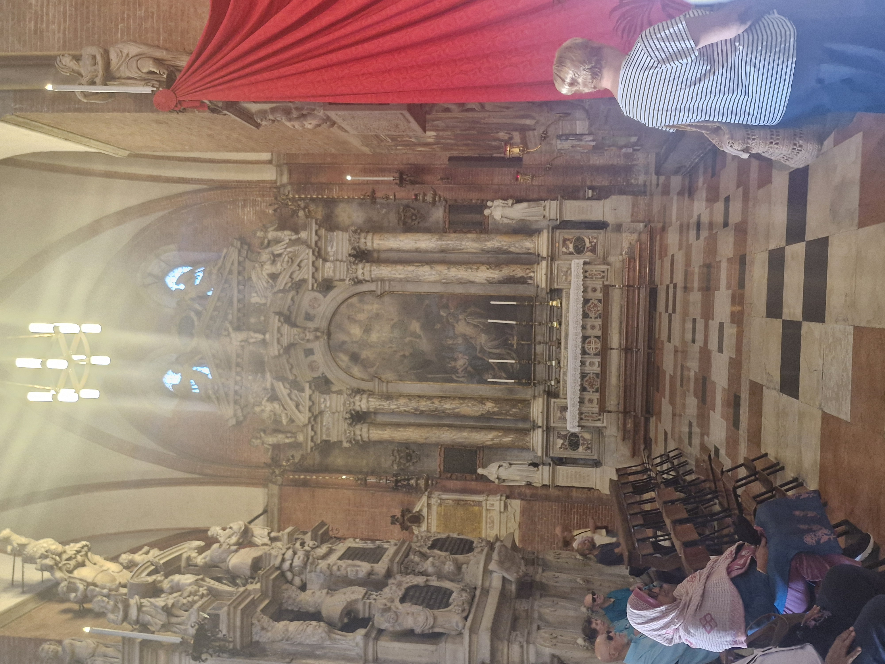
Photo · Munasinghe
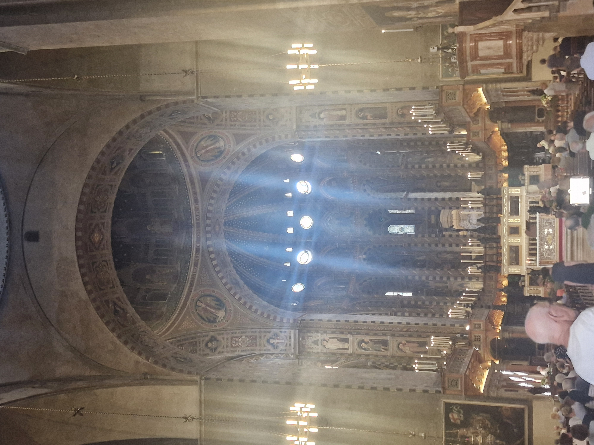
Photo · Munasinghe
Left: the Tomb of St Anthony, its marble worn smooth by eight centuries of pilgrims' hands and heaped with photographs and written petitions. Right: the great nave, cool and dim, light pouring down from the domes.
You come in from the morning heat and the basilica is vast and hushed, seven domes riding over a forest of stone. We made straight for the Cappella dell'Arca, where the saint's tomb stands against a wall of carved marble — and joined the slow line of pilgrims who lay a hand flat on the green stone and pray.
You lay your hand on the wall, close your eyes, and ask — for the lost thing, the sick, the worry carried from home.
Around the tomb the wall is papered with photographs and folded notes, thank-yous and pleas in a dozen languages. We lit our candles, said our prayers, and left St Anthony a few of our own worries before the road called us on.
— Issue 06 · PADUA · St Anthony's Tomb —
PADUA · A GILDED MADONNA
Our Lady, in gold,
above the crowd.
Beneath a great fall of crimson cloth, a golden Madonna and Child keeps watch over the pilgrims who come and go all day beneath her.
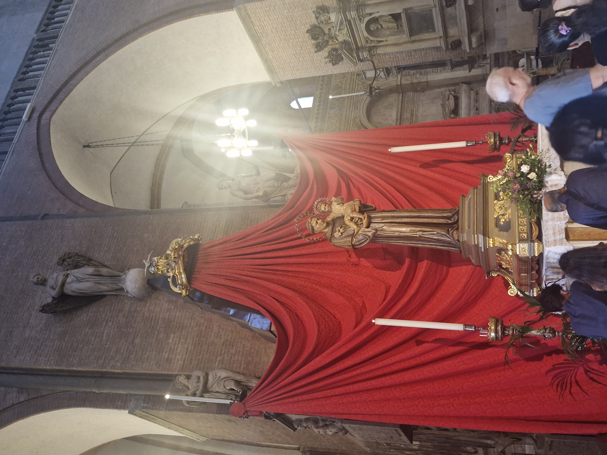
Photo · Munasinghe
A gilded Madonna and Child on her column, haloed in tiny lights, the red drape spilling down behind her like a royal canopy.
Everywhere in the Santo there is gold — Donatello's bronzes on the high altar, reliquaries, candlelight — but the children stopped for this one: Mary in gold with the Child on her arm, small and bright against all that red.
It felt the right note to carry out of the door, because the morning's next stop was hers too — a quieter shrine, an hour to the west, to a name of Our Lady one of us had known since childhood.
— Issue 06 · PADUA · The Gilded Madonna —
ROSA MISTICA · FONTANELLE DI MONTICHIARI
A grandmother's
favourite miracle.
West of Verona, down a country lane near Brescia, a spring in the fields where — in 1947 — Our Lady is said to have appeared to a young nurse named Pierina Gilli, asking to be honoured as Rosa Mystica, the Mystical Rose.
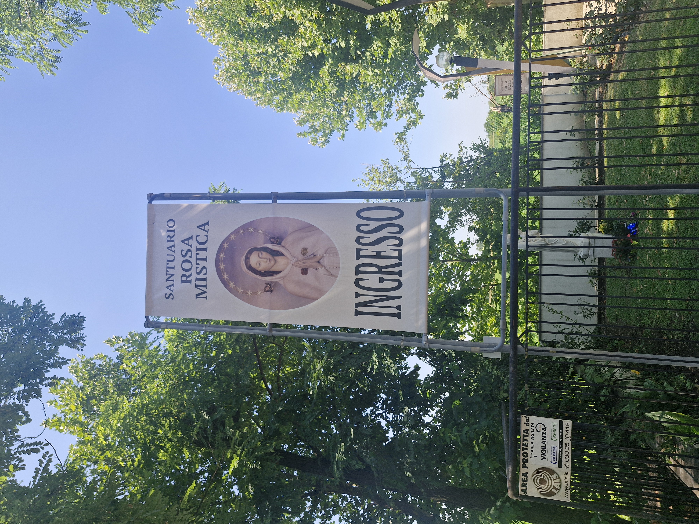
Photo · Munasinghe
The Ingresso — the way in to the Santuario Rosa Mistica at Fontanelle, the Madonna's image on the banner and a summer sky over the trees.
Some of these stories we have known all our lives. In a devout Catholic home a grandmother once told them to the children the way others tell fairy tales — the apparitions, the graces, Our Lady coming to a simple nurse in a small Italian town. Of them all, Rosa Mistica was her favourite.
To stand at last at the spring she used to tell us about — with our own children beside us — was to close a circle she began long ago.
So this was the one detour we made against the map: a good hour and a half the wrong way, west when Florence lay south. Nobody minded. Some places you go for the miles, and some you go for the grandmother who first told you the story.
— Issue 06 · ROSA MISTICA · The Way In —
ROSA MISTICA · MATER ECCLESIAE
The Mystical Rose,
Mother of the Church.
Three roses — white, red and gold — for the spirit of prayer, of sacrifice, and of penance. In 2024 the little country shrine was recognised at last as a diocesan Marian sanctuary of the Diocese of Brescia.
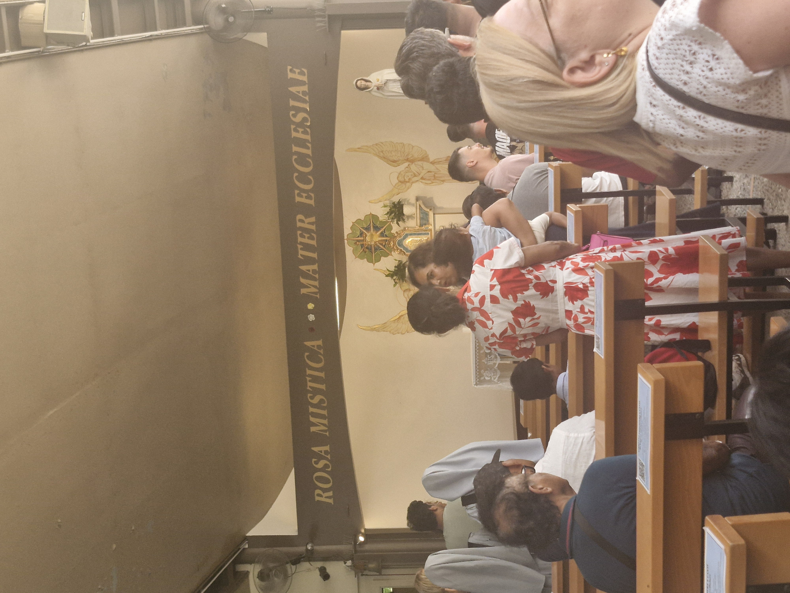
Photo · Munasinghe
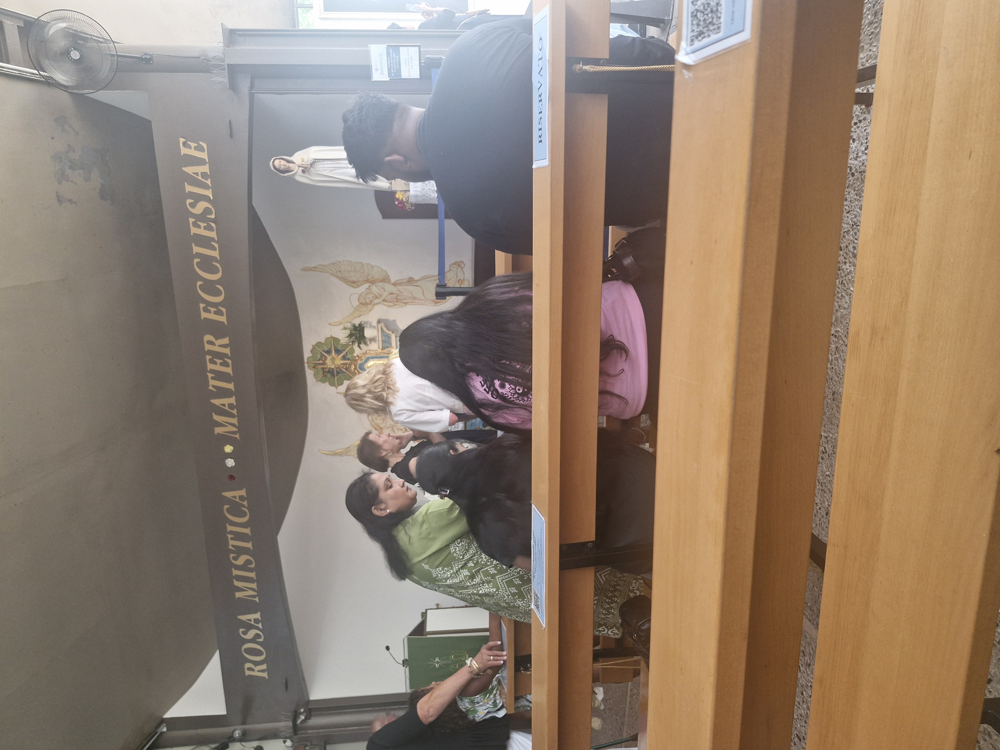
Photo · Munasinghe
ROSA MISTICA · MATER ECCLESIAE — the Mystical Rose, Mother of the Church. Pilgrims from around the world fill the simple hall, many kneeling, many in tears.
The shrine itself is plain — a covered hall of quiet folk from every corner of the earth, rosaries moving, a low murmur of prayer in a dozen tongues. There is nothing grand about it, and that is rather the point.
The devotion asks for small, ordinary things: prayer, sacrifice, penance — and a great deal of trust. We sat with the children among the pilgrims and let the stillness do its work, a world away from the Venetian crowds of the day before.
— Issue 06 · ROSA MISTICA · Mater Ecclesiae —
ROSA MISTICA · THE SPRING & THE GRACES
At the spring,
a wall of thank-yous.
At Fontanelle — "the little springs" — pilgrims come to the water and to the white statue of Our Lady, and leave behind marble plaques of two words repeated a thousand times: grazie ricevute, graces received.
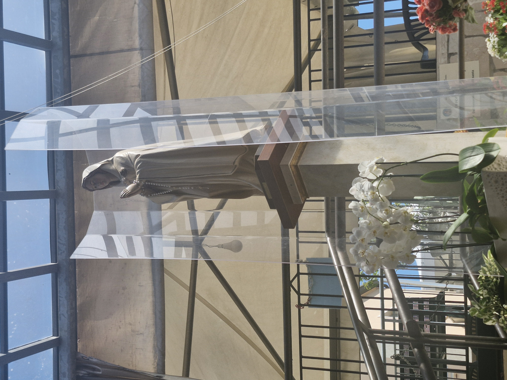
Photo · Munasinghe
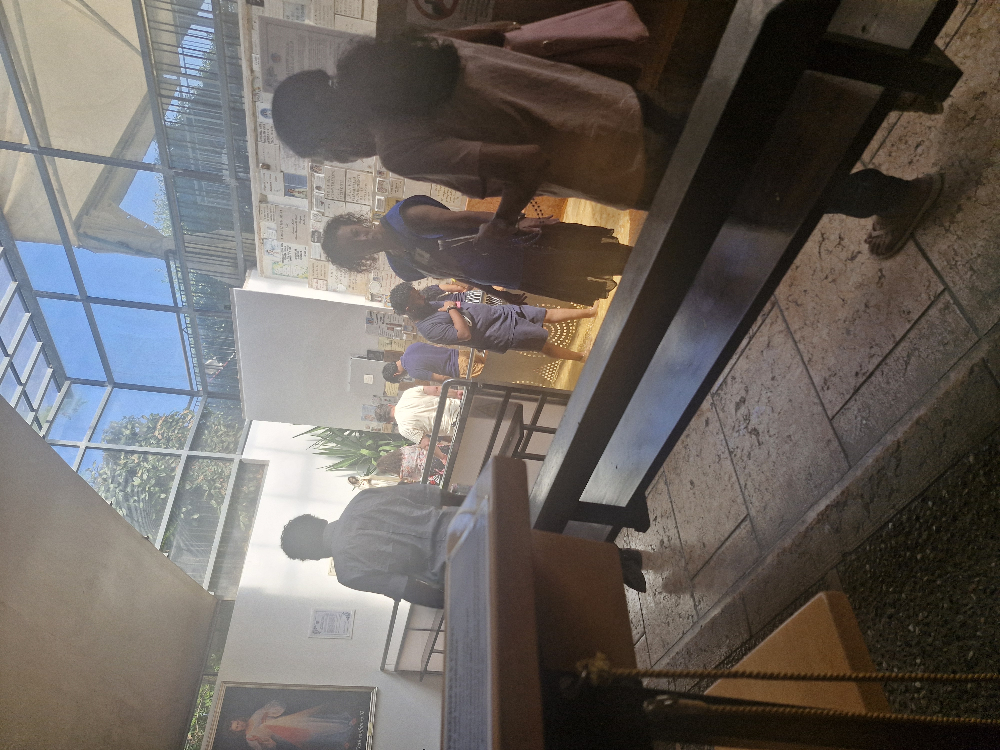
Photo · Munasinghe
Left: Our Lady at the spring, rosary in hand, white orchids at her feet. Right: the family among the ex-voto plaques — walls of grazie from pilgrims whose prayers, they believe, were answered here.
We filled our little bottles at the spring to carry home — the water of Fontanelle, all the way to New Zealand — and stood a while before the white statue with her rosary and her orchids.
A grandmother's story, a country spring, five of us with our bottles full — some prayers take a lifetime to arrive.
Then south at last, back to the motorway and on towards Florence — a little behind schedule, a little quieter than we set out, carrying between us a small bottle of water and a very old story finally kept.
— Issue 06 · ROSA MISTICA · Graces Received —
FLORENCE · DAY 11 · 15:00
Where the Renaissance
became inevitable.
We rolled in from the north around three — over the Apennines, past the great IKEA at the city's edge — and parked the car for a city built to be walked. This is Florence: the cradle of the Renaissance, packed into a mile of the Arno.
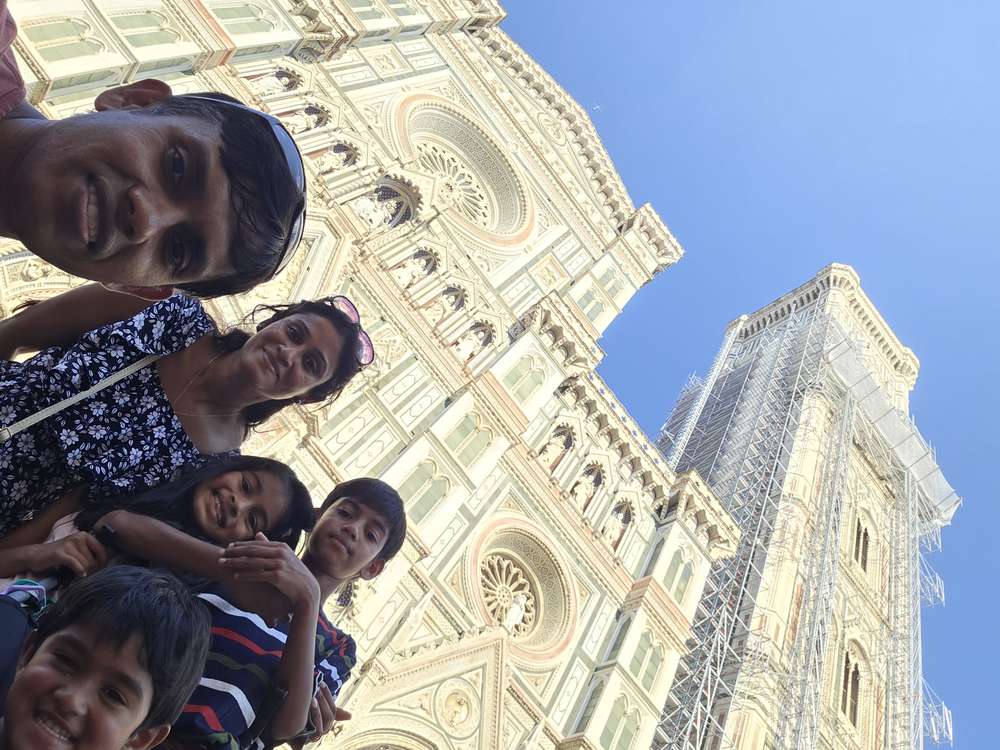
Photo · Munasinghe
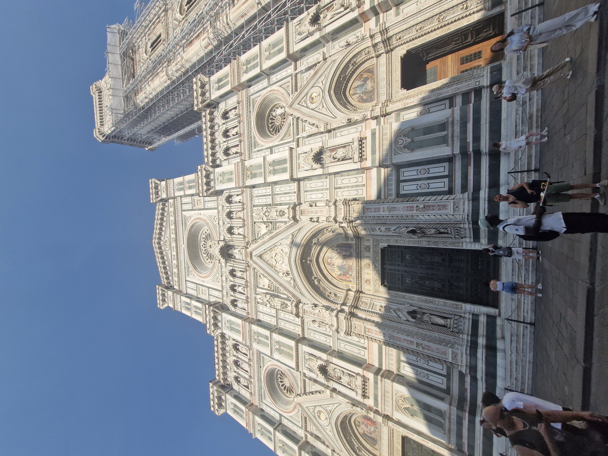
Photo · Munasinghe
All five of us under the Duomo — Santa Maria del Fiore — its façade a fever of green, white and pink marble, Giotto's bell tower alongside in its summer scaffolding. Behind rises Brunelleschi's dome, still the largest masonry dome ever raised.
The shrine had run us late, so Florence began at a gallop: park outside the ZTL, drop the bags, and walk straight into the storm of marble that is the cathedral square. The Duomo simply stops you — there is no easing into it.
Half a mile of the Arno holds more art than most whole countries. You do not so much visit Florence as wade through it.
Two great tickets waited: the Uffizi at a quarter past four, and the gold-ceilinged Baptistery. The Bell Tower climb we let go — a shrine is worth more than a staircase — and set off on foot.
— Issue 06 · FLORENCE · The Cradle of the Renaissance —
FLORENCE · THE UFFIZI · 16:15
Booked at a quarter
past four.
Once the Medici's offices — uffizi means "offices" — now one of the greatest galleries on earth, a long U of corridors hung with the whole Renaissance.
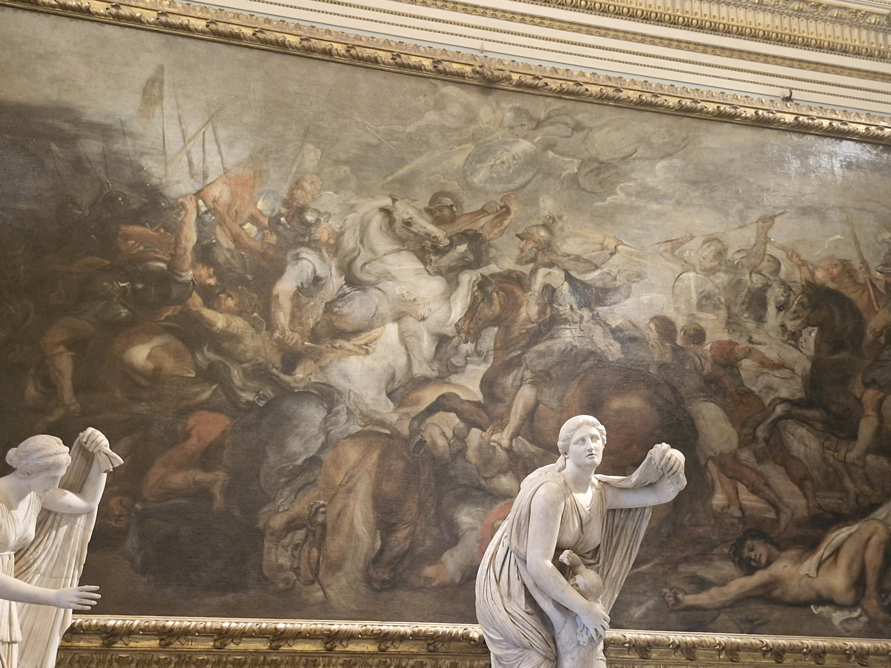
Photo · Munasinghe
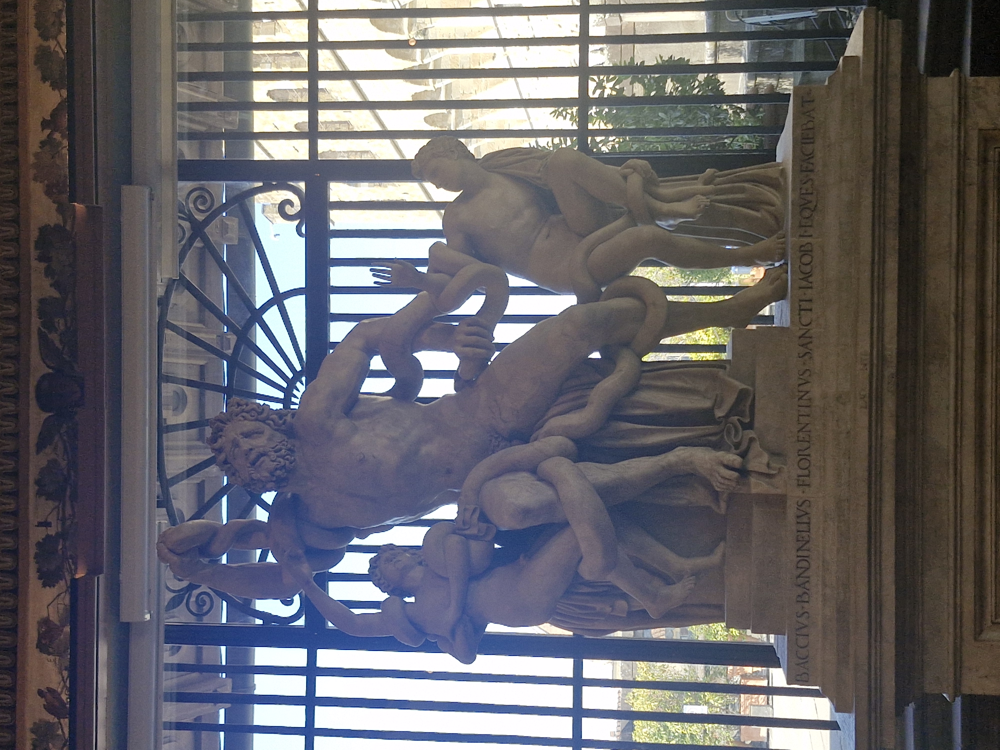
Photo · Munasinghe
Left: the Niobe Room — the Niobids, Roman marble copies of Greek Hellenistic originals (c. 3rd century BC), a mother shielding her youngest child, beneath a great battle canvas. Right: the Laocoön by Baccio Bandinelli — a marble copy of the ancient Rhodian group (unearthed in Rome, 1506), commissioned by Pope Leo X in 1520 and finished about 1525.
The timed ticket spared us the worst of the queue, and then it is simply room after room of things you have seen in books all your life — Botticelli, Leonardo, Michelangelo, Raphael — hung on the walls as if it were nothing.
The children lasted better than we feared, partly for the statues (easier to love than paintings at eight) and partly for the windows: the long corridor looks straight down onto the Arno and across to the Ponte Vecchio.
— Issue 06 · FLORENCE · The Uffizi —
FLORENCE · THE UFFIZI · MASTERS
Madonnas, saints,
and Medici gold.
Room after room of altarpieces and tondi — the sacred painting that Florence's wealth and faith made possible, and its greatest hands perfected.
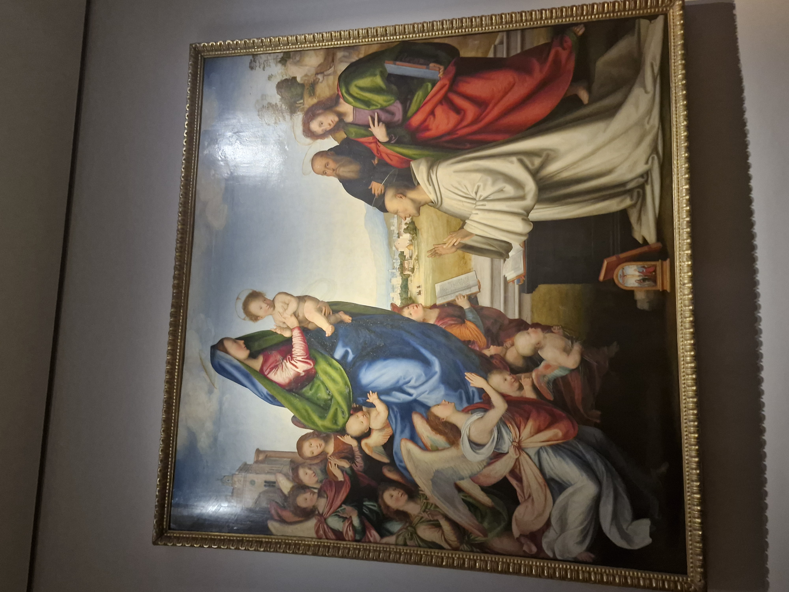
Photo · Munasinghe
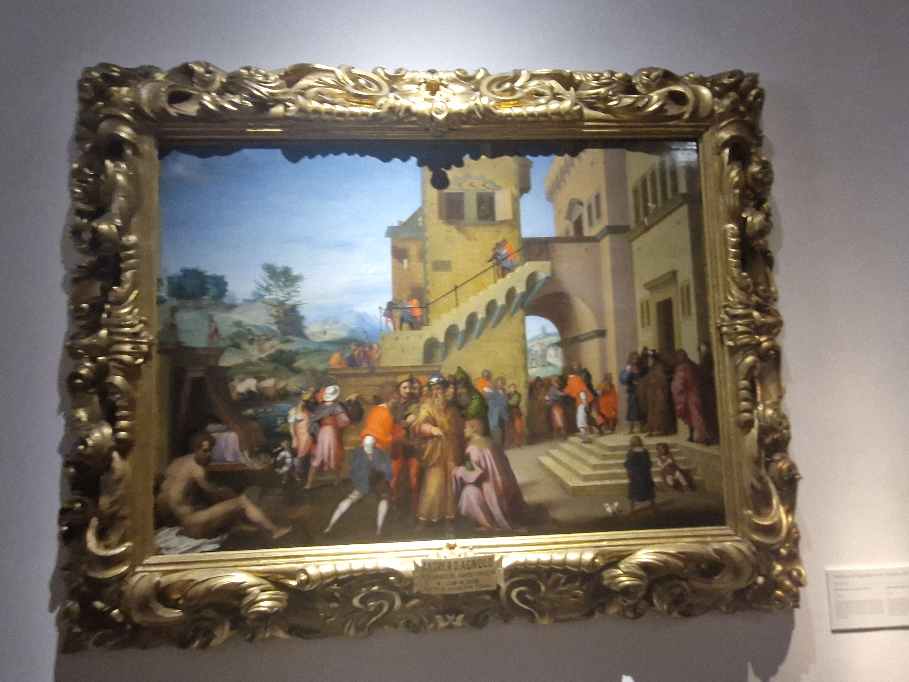
Photo · Munasinghe
Left: a sacra conversazione — the Madonna and Child enthroned among singing angels and saints (artist to confirm from the wall label). Right: a crowded narrative panel by Andrea del Sarto (Andrea d'Agnolo, 1486–1530) — the painter Vasari praised as senza errori, the faultless one.
For a Catholic family the Uffizi is a strange, double thing — a museum, yes, but wall after wall of the very faith we had just been praying in Padua and at Fontanelle, here painted by the finest hands the world has produced.
You move slowly, pick a favourite in each room, and try not to let the sheer quantity turn it into wallpaper. By the end the little ones were counting angels; there were, it turned out, a great many to count.
— Issue 06 · FLORENCE · Renaissance Masters —
FLORENCE · THE UFFIZI · DEVOTION
Holy Families,
round and small.
The Florentine rooms are full of the Holy Family — in great gold-framed panels and in the intimate tondo, the round picture that Florence made its own in the early 1500s.
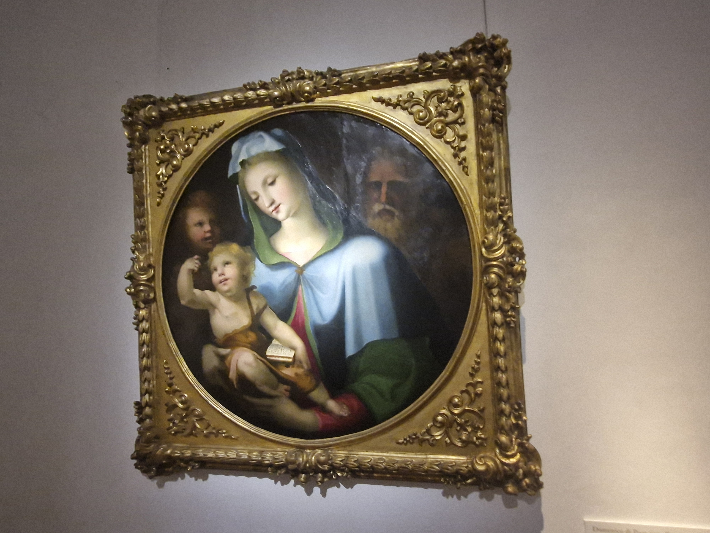
Photo · Munasinghe
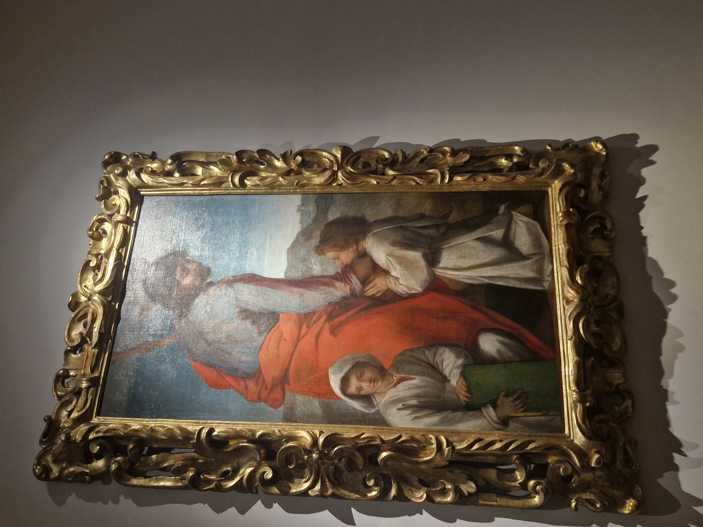
Photo · Munasinghe
Left: a Holy Family tondo — the round panel Florentine painters favoured for the home: Mary with the Christ Child, the infant St John and an aged Joseph, c. early 1500s. Right: a sacred scene set in a richly carved gilt frame. (Both artists' names on the wall labels — to be confirmed.)
By this point the children were flagging, but the round paintings drew them back — a shape a child can take in at a glance, and always the same tender scene: a mother, a baby, a small cousin, and a watchful old man.
Florence painted this subject a thousand ways. Half the joy of the Uffizi is walking one room and seeing a dozen different hands take the very same Madonna and make her entirely their own.
— Issue 06 · FLORENCE · The Uffizi · Devotion —
FLORENCE · THE UFFIZI · SAINTS & ANTIQUITY
An altarpiece,
and an antique.
Two faces of the same collection: a many-panelled church altarpiece, and — everywhere between the paintings — the ancient marbles the Medici prized above all else.
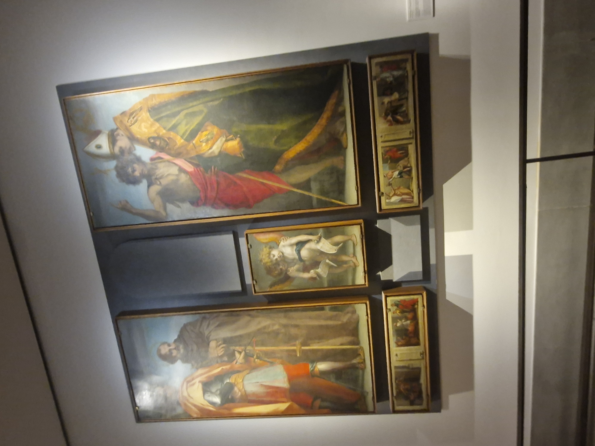
Photo · Munasinghe
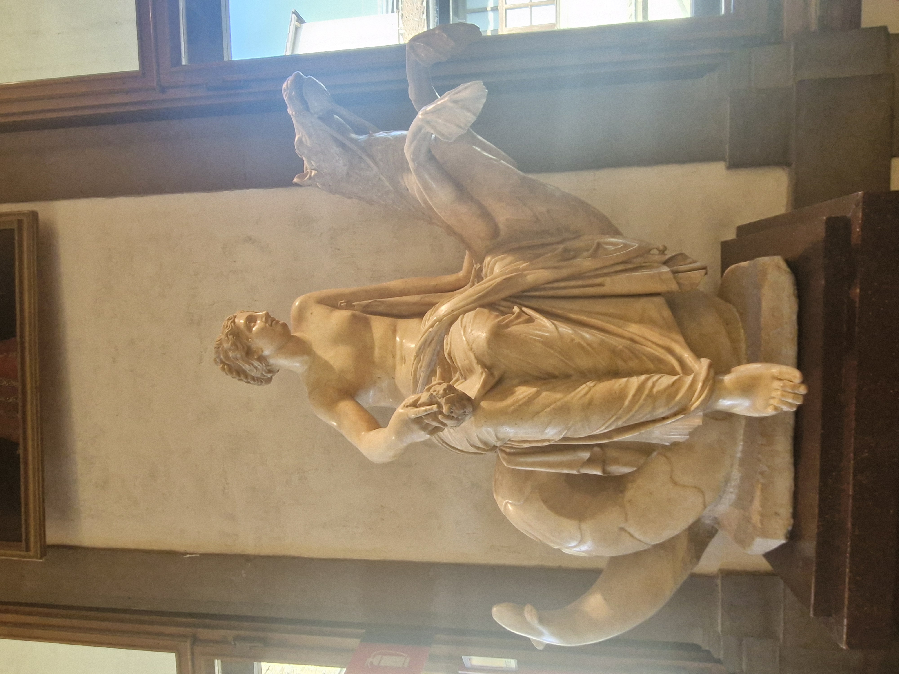
Photo · Munasinghe
Left: a multi-panelled altarpiece — a mitred bishop-saint and companions above a predella of small narrative scenes (artist to confirm from the label). Right: an antique marble in the corridor — a Roman copy after a Greek original, of the kind the Medici collected obsessively.
The Uffizi is really two collections braided together: the paintings the Medici commissioned, and the ancient sculpture they hunted across Italy. You turn from a gold-ground altarpiece and there, framed in a window, stands a two-thousand-year-old marble.
It is a very Florentine idea — that Christian saints and pagan gods belong in the same long corridor, and that beauty, wherever it comes from, is worth the keeping.
— Issue 06 · FLORENCE · The Uffizi · Saints & Antiquity —
FLORENCE · PIAZZA DELLA SIGNORIA
A square that is
an open-air museum.
Beneath the tower of the Palazzo Vecchio, Florence keeps some of its greatest sculpture out in the open air, free to all — colossal marble and green bronze under the Loggia dei Lanzi.
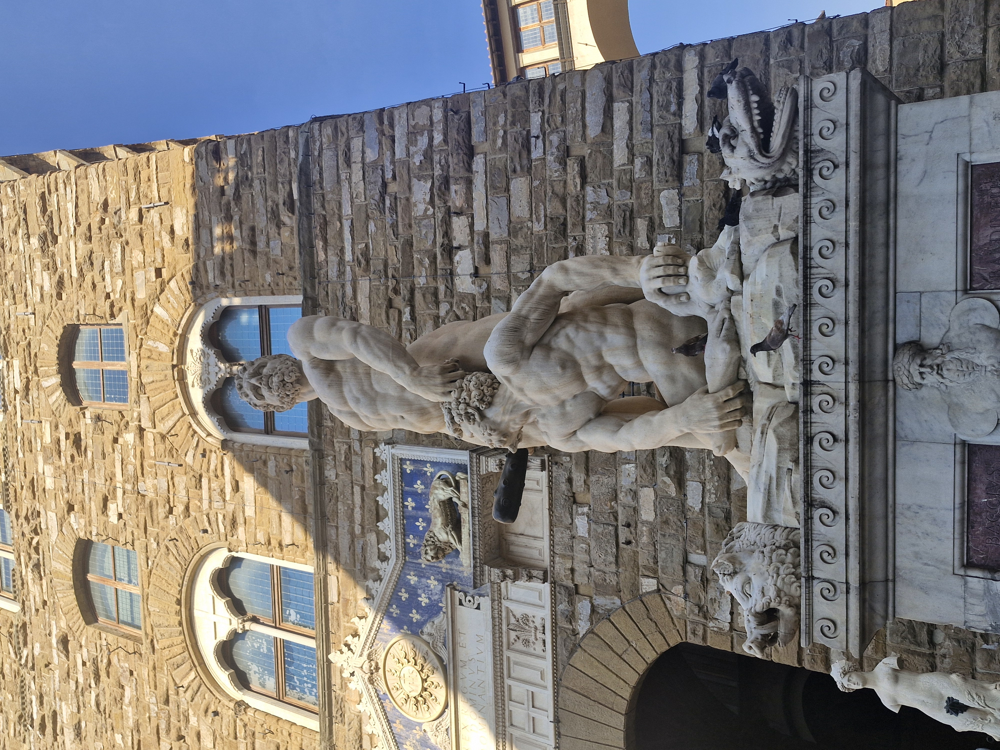
Photo · Munasinghe
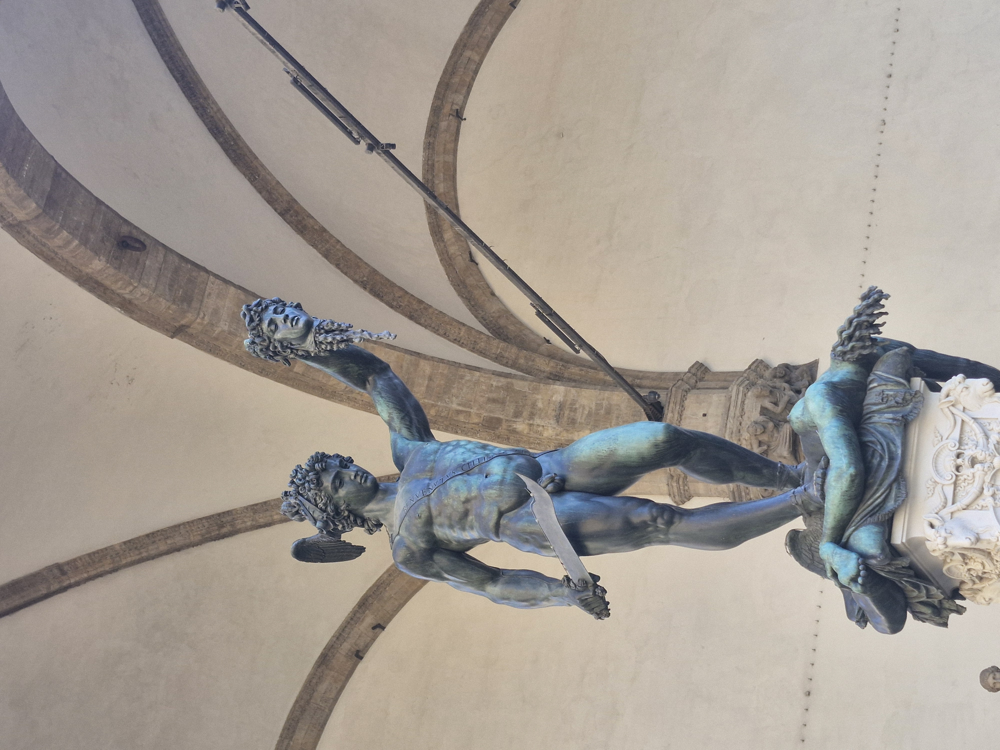
Photo · Munasinghe
Left: Bandinelli's Hercules and Cacus guarding the Palazzo Vecchio, where a copy of Michelangelo's David also stands. Right: Cellini's bronze Perseus with the Head of Medusa, cast in a single pour in 1554.
You come out of the Uffizi straight into this square, and it is almost comic how much marble is simply standing about — Perseus with Medusa's head, the Rape of the Sabines, Neptune's fountain, and a David where the real one once stood.
It is the best free show in Florence. The children ran between the statues in the low gold evening light while we caught our breath and worked out where dinner might be.
— Issue 06 · FLORENCE · Piazza della Signoria —
FLORENCE · THE BAPTISTERY
Look up: a ceiling
of solid gold.
The oldest building on the cathedral square — an eight-sided marble box where Dante was baptised — and, inside, a dome sheathed in shimmering 13th-century gold mosaic.
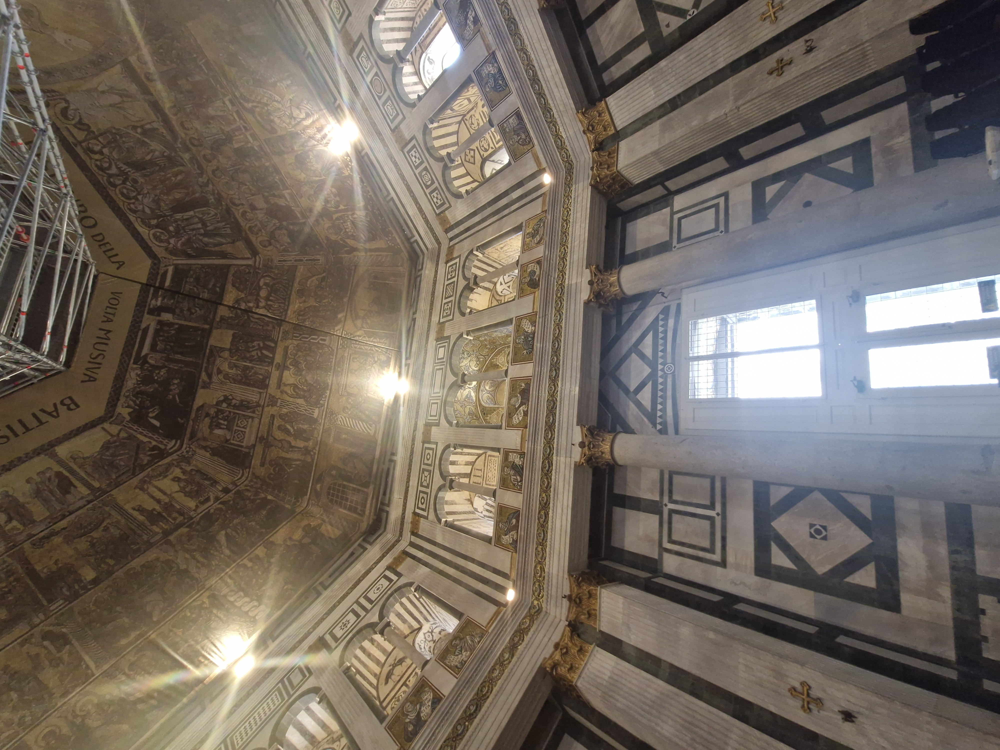
Photo · Munasinghe
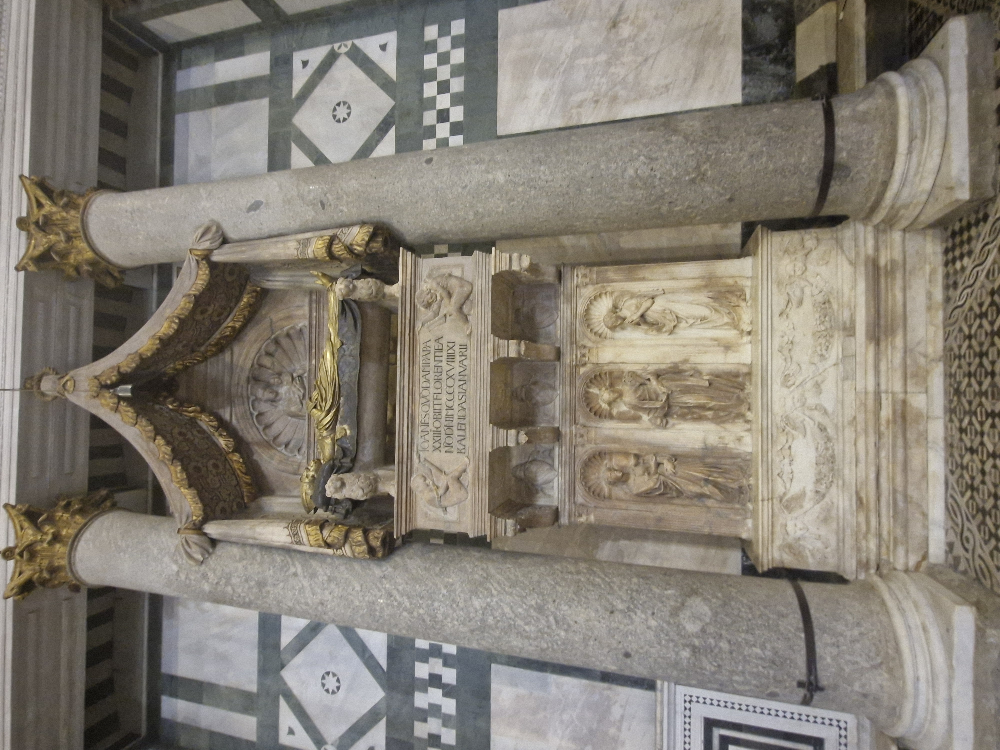
Photo · Munasinghe
Left: the mosaic vault — a whole heaven of gold (half-hidden this summer behind restorers' scaffolding). Right: Donatello & Michelozzo's tomb of Antipope John XXIII, set into the marble wall.
After the Uffizi you step into the Baptistery, tip your head all the way back, and simply stare. The whole ceiling glitters — angels, patriarchs, Genesis and the Last Judgement — in tiny cubes of gold glass laid eight centuries ago.
Every Florentine for six hundred years was baptised under this gold — Dante among them.
The famous bronze doors — Ghiberti's Gates of Paradise — are outside (the originals safe in the museum). But it is the ceiling that stays with you: a quiet, blazing heaven you enter off a busy square.
— Issue 06 · FLORENCE · The Baptistery —
FLORENCE · STREET FOOD
Lunch, folded
into warm bread.
Between the galleries, the cheapest and happiest meal in Florence: schiacciata — flat Tuscan bread split and piled with prosciutto, pecorino, roast vegetables and sun-dried tomatoes.
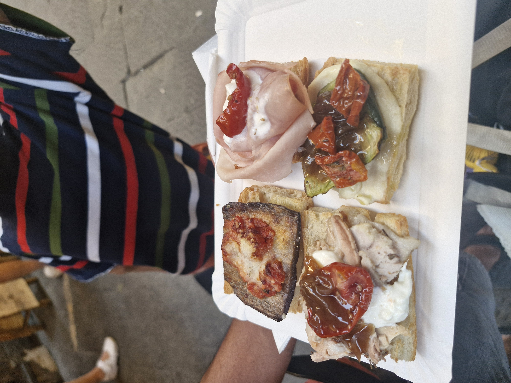
Photo · Munasinghe
A tray of schiacciata — mortadella and stracciatella, roast courgette and tomato, chicken and pecorino — eaten standing in the street for a handful of euros.
Florence taught us that you do not need a table to eat well. A few euros at a bakery counter buys a slab of warm schiacciata heavy with filling, and you eat it on a step with the family, watching the crowds go by.
It fed five of us for the price of one sit-down plate, and nobody complained. The Renaissance can wait twenty minutes; the warm bread cannot.
— Issue 06 · FLORENCE · Street Food —
PISA · PIAZZA DEI MIRACOLI
The tower that
forgot to fall.
Eight centuries of leaning, and still standing. A bell tower begun in 1173 that started to tip before the third floor was finished — because someone raised a 14,500-tonne marble tower on soft Tuscan clay.
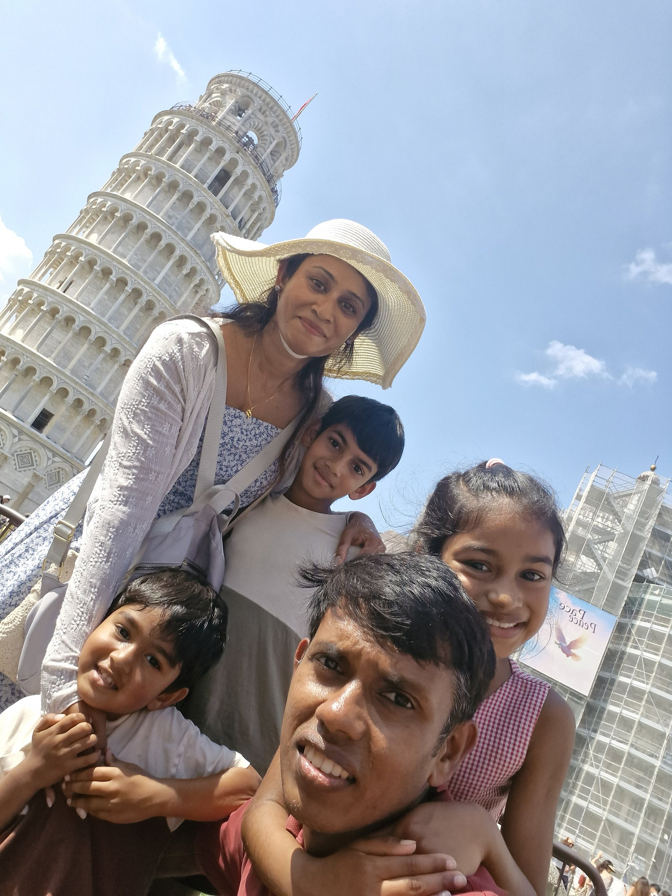
Photo · Munasinghe
All five of us in the Piazza dei Miracoli — the Leaning Tower tipping behind, and the Duomo in its summer scaffolding to the right.
We drove in from Florence for the morning to do the one thing everyone comes to Pisa to do. But first, the parking — because you cannot drive to the tower. The whole Piazza dei Miracoli sits inside a camera-enforced ZTL, and a wrong turn is a €90 fine in the post. We left the car just outside the walls and walked the last five minutes in.
You do not drive to the Leaning Tower — you park outside the walls and let the fine cameras watch someone else.
And there it is: smaller than you expect, whiter than you expect, and leaning far more than any photograph prepares you for. It has tipped nearly four metres off true, was pulled back a fraction in the 1990s, and is now — the engineers promise — good for another two hundred years.
— Issue 06 · PISA · The Leaning Tower —
PISA · A CATHEDRAL THAT TRAVELLED
Why it all looks
a little Eastern.
Stand in the square and something feels familiar in a way you cannot quite place — the striped marble, the pointed arches, the sand-coloured stone. There is a reason: medieval Pisa traded across the whole Islamic Mediterranean, and brought the patterns home.
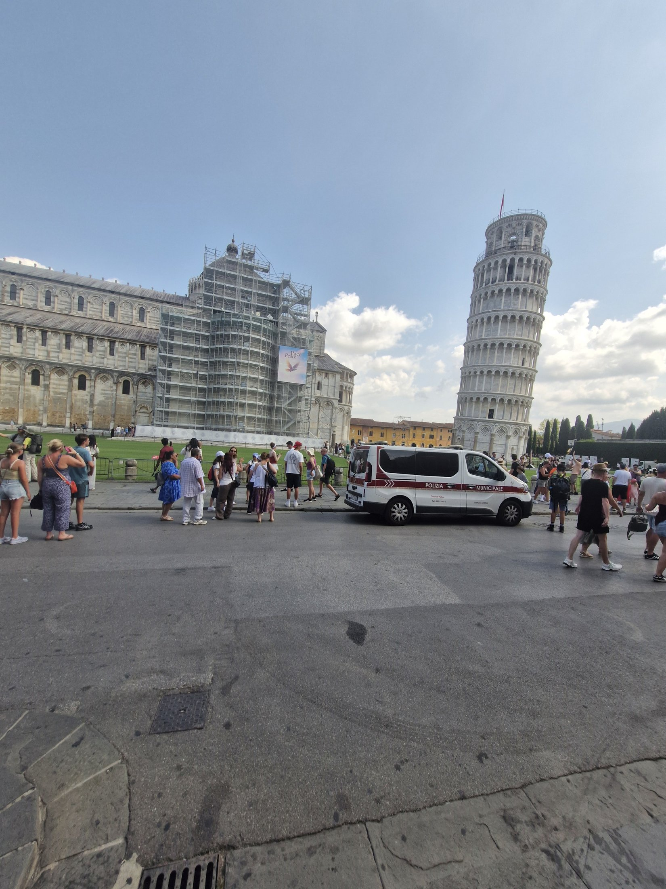
Photo · Munasinghe
The Piazza dei Miracoli — the Duomo (begun 1063) and the Campanile beyond, a Polizia Municipale van guarding the edge of the pedestrian zone.
The children asked a good question on the drive: why do all these old Italian towns feel a little like the Middle East? The honest answer is that they share a grandmother. The Mediterranean — from Morocco to the Levant to Tuscany — is one hot, dry world, and everyone in it learned the same tricks: pale stone that throws back the sun, narrow shaded lanes, small windows, and towns stacked on defensible hills.
Pisa's sailors fought and traded across the Muslim Mediterranean — and came home with the patterns in their eyes.
But Pisa is a special case. As a medieval sea republic it fought and traded from North Africa to the Holy Land, and its cathedral shows it: bands of light and dark marble, interlacing and pointed arches, and — set right into the walls of its churches — real Islamic ceramic bowls, the bacini, brought home as trophies. The same East-meets-West current runs all the way to Constantinople, where Hagia Sophia stands as its grandest monument. So the instinct was right: this is Europe, but a Europe that spent centuries looking across the sea.
— Issue 06 · PISA · East Meets West in Stone —
PISA · THE OBLIGATORY PHOTO
Everyone holds
up the tower.
There is a law in Pisa: you may not leave until someone in the family has pretended to prop up, pinch, push or karate-chop the Leaning Tower. We obeyed.
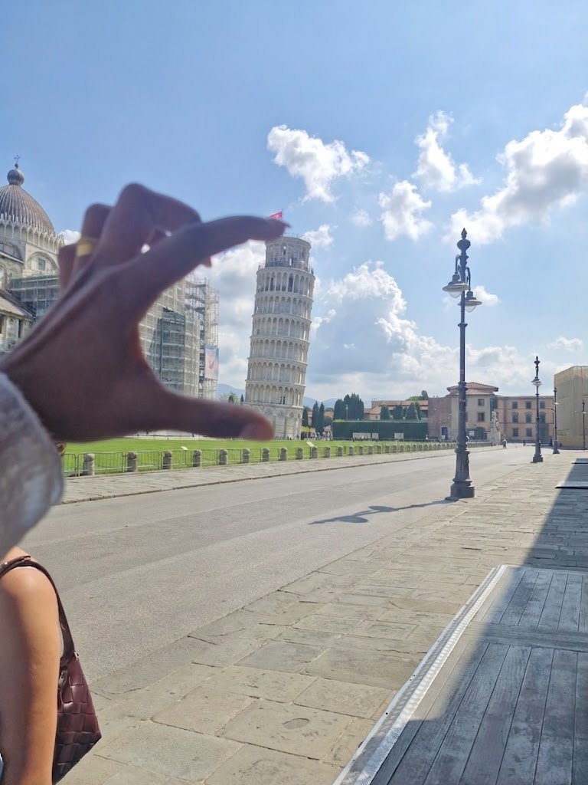
Photo · Munasinghe
The whole point of the far side of the piazza — line up the fingers and hold the tower up for the camera. We caught the square almost empty, which almost never happens.
The lawn on the west side of the piazza is a slow-motion comedy: a hundred people at once, arms outstretched at nothing, each certain their photographer has the angle. It takes a few goes, a lot of "left a bit — no, my left," and then suddenly the fingers meet the tower and everyone laughs.
It is the silliest photo we took in Italy and one of the best: eight hundred years of engineering worry, reduced to a family holding it up with two fingers.
— Issue 06 · PISA · Holding Up the Tower —
TUSCANY · THE ROAD TO UMBRIA
A castle you can
only wave at.
Halfway between Tuscany and Perugia, a perfect medieval fortress crowns a cypress hill near Castiglion Fiorentino — walls, towers, and a great square keep. And you cannot go in.
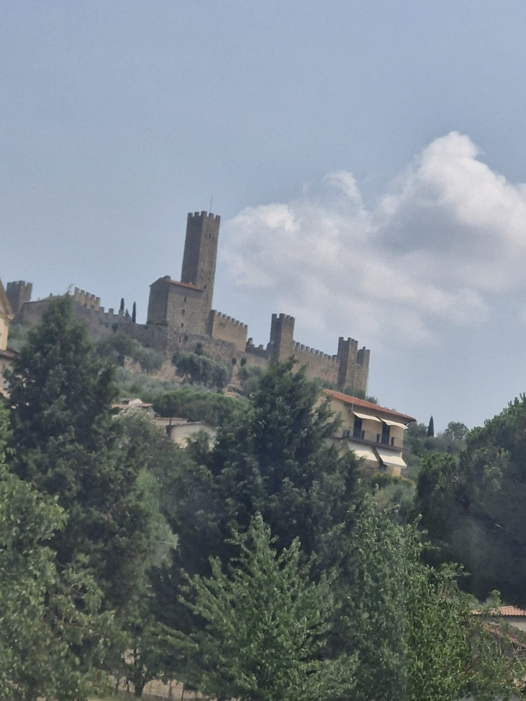
Photo · Munasinghe
Castello di Montecchio Vesponi — 13th-century walls and keep above the olive groves. Once the stronghold of the English mercenary John Hawkwood, it is privately owned today.
We spotted it from the road and pulled over, sure we had found our afternoon stop — and then learned the catch. The castle is private, opened only for guided tours on the second Sunday of the month, booked ahead. On an ordinary July afternoon the view from the valley is the whole visit.
Some castles you tour. Some you simply admire from the road, and drive on.
It was, in its way, the perfect Tuscan postcard: honey stone, black cypresses, a fortress that has watched this valley for seven hundred years. We took our photograph, waved at John Hawkwood's old walls, and carried on east towards Umbria.
— Issue 06 · TUSCANY · Montecchio Vesponi —
PERUGIA · ARCO ETRUSCO
Through a gate
2,300 years old.
The grandest of Perugia's ancient gates — raised by the Etruscans in the 3rd century BC, rebuilt by the Emperor Augustus, and still the way into the old town. Read the stone: AVGVSTA PERVSIA.
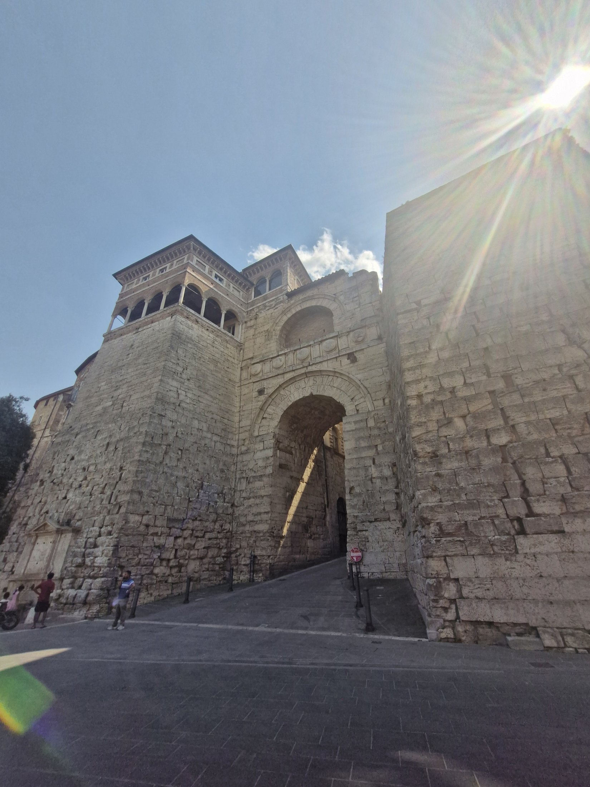
Photo · Munasinghe
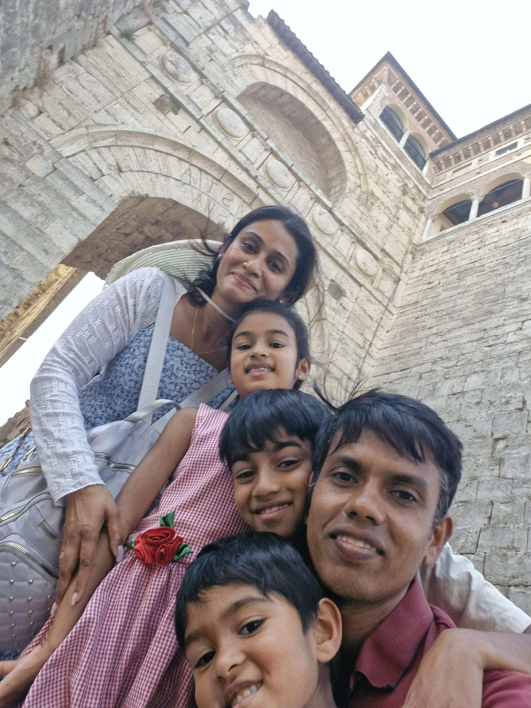
Photo · Munasinghe
Left: the Arco Etrusco (Arch of Augustus) — Etruscan blocks below, Augustus's inscription above, a Renaissance loggia perched on the old tower. Right: all five of us under 2,300 years of stone.
Perugia sits on a hill, and the two sights we came for were both free and both outdoors: this arch, and the view. Coming down Via Ulisse Rocchi from the centre the gate looks almost plain — so we did what we had been told and walked through it, then turned around. From below it is enormous: two great towers of huge Etruscan blocks with the Roman inscription running across the top.
Walk through the arch and turn around — the plain side faces the town; the mighty side faces the world.
Twenty-three centuries. Older than the Colosseum, older than Pompeii, older than almost anything else on the trip — and children still run under it on the way to school. Some monuments you queue for; this one you simply walk through.
— Issue 06 · PERUGIA · The Etruscan Arch —
PERUGIA · UP THE OLD TOWN
Stairs, secrets,
and a giant ant.
A hill town is all climb — steep brick lanes, covered passages, and, if you look up, a great bronze ant marching up a medieval wall.
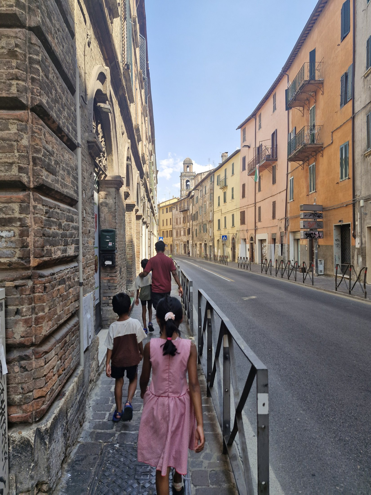
Photo · Munasinghe
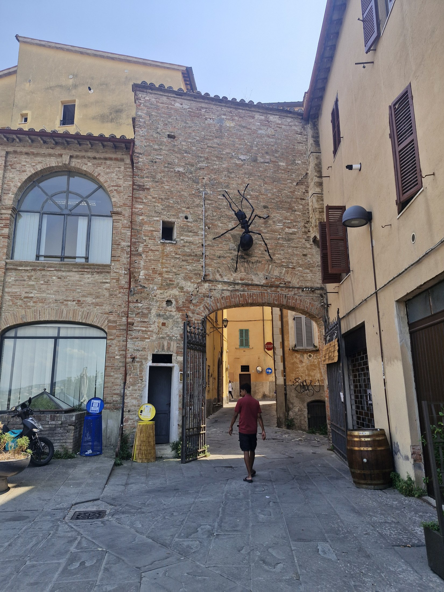
Photo · Munasinghe
Left: the steep brick lanes off Via Ulisse Rocchi, the children leading the climb. Right: Perugia's famous giant ant, clinging to an old brick wall — a favourite piece of the city's street art.
Everything in Perugia is uphill or downhill; there is no flat. We climbed worn brick ramps between tall stone houses, ducked through vaulted passages, and let the children set the pace — which mostly meant racing to the next corner and waiting.
And then the ant: enormous, black, marching straight up a wall as if the building were level ground. The children loved it more than any cathedral. Perugia is like that — ancient and playful at once, a city that hides a giant insect two streets from a 2,300-year-old gate.
— Issue 06 · PERUGIA · Up the Old Town —
PERUGIA · THE VIEW
A city with its
head in the hills.
From the ramparts and the grand terraces, Umbria falls away in every direction — terracotta roofs, then olive groves, then blue hills to the horizon.
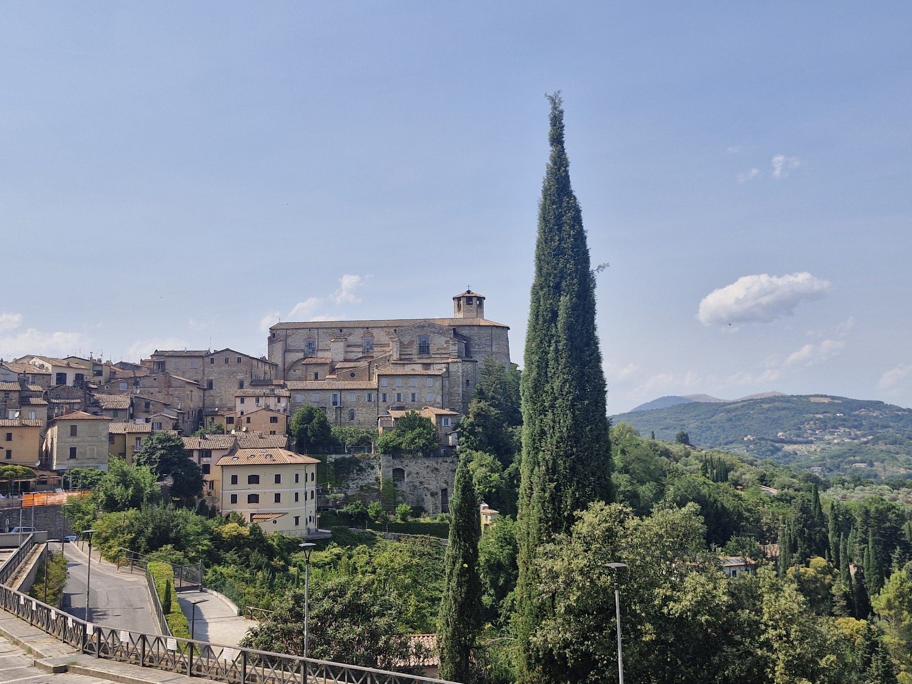
Photo · Munasinghe
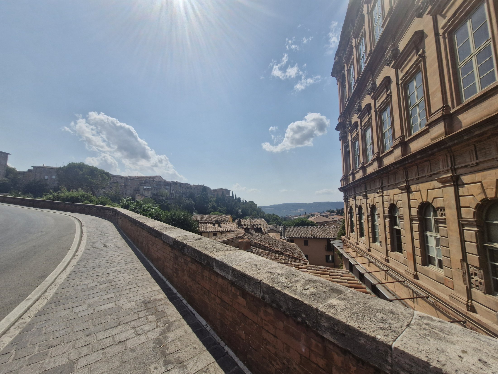
Photo · Munasinghe
The Umbrian panorama from Perugia's heights — stone houses stacked down the hillside, a lone cypress spearing the sky, and the far hills beyond.
This is the other thing we came for, and it costs nothing: you turn a corner by one of the great palazzi and the whole of Umbria is simply there, laid out below you. Perugia is built along the top of its hill, so almost every street ends in a view.
You turn a corner in Perugia and a whole province opens at your feet.
We stood a long while at the wall, picking out villages on far hilltops, the heat softened by a breeze that only reaches the high towns. After the crowds of Pisa it was wonderfully quiet — a city that lets you catch your breath and look a long way.
— Issue 06 · PERUGIA · The View —
PERUGIA · THE ROCCA PAOLINA
A buried city
under the streets.
To reach the hilltop without the climb you ride escalators up through the Rocca Paolina — a whole medieval quarter that a 16th-century pope buried under his fortress, its brick-vaulted streets still standing in the dark.
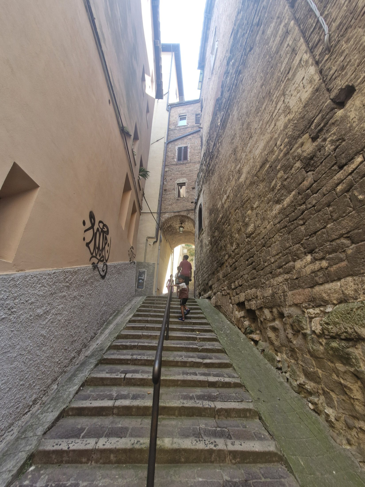
Photo · Munasinghe
Inside the Rocca Paolina — the vaulted medieval lanes entombed beneath the old papal fortress, now the strangest and coolest way up into the city.
Perugia's cleverest trick is how you get up the hill. You park below and step onto a chain of escalators that carry you up through the Rocca Paolina — the buried streets of a medieval neighbourhood that Pope Paul III flattened and built over in 1540 to cow the city. The houses are still there, roofless, in the dark, with the escalators threading between them.
An escalator through a buried medieval street — the coolest walk in Perugia, in every sense.
On a hot afternoon it is blessedly cold: cool stone, dim light, and the odd sensation of gliding up through a town sealed away five hundred years ago. You step out at the top into the sunlight of the main square, as if the hill had never happened.
— Issue 06 · PERUGIA · The Rocca Paolina —
ROME + VATICAN · DAYS 12-14
A city the
Romans built,
the popes kept.
Three days in Rome was not enough. The Colosseum, the Forum, the Pantheon, the Vatican Museums, the Sistine Chapel, the Spanish Steps, the Trevi Fountain — every corner had something 2,000 years old.
Mon 20 — Wed 22 Jul 2026Rome + Vatican City3 days · 30 km walked
📷 images/italy/day-12-colosseum-interior.jpg
HERO PHOTO · TBD
Inside the Colosseum — completed 80 AD, held 65,000 spectators, hosted 400 years of gladiator combat.
You cannot understand Rome in three days. We did not try. We picked five sites — the Colosseum and Forum, the Pantheon, the Spanish Steps, the Vatican Museums, and the Trevi Fountain — and we walked between them slowly, eating gelato every three streets to keep the kids motivated. The Vatican Day deserves its own issue: four hours in the Vatican Museums (we cried looking at the Sistine Chapel), an hour in St Peter's Basilica, lunch in Borgo Pio, the Castel Sant'Angelo, gelato at Piazza Navona.
All roads lead to Rome. And they really did: 80,000 km of Roman roads still shape Europe today.
On Day 13 we did the Pompeii day trip. The drive from Rome takes 2.5 hours. Pompeii was buried by Vesuvius in 79 AD and forgotten for 1,700 years. Walking its streets is the closest thing to time travel humans have managed. We stood inside a baker's shop and looked at the oven where bread was still inside on the morning the volcano erupted.
— Issue 06 · ITALY · 05 —
★ TASTES OF THE TRIP
Six things we ate
and won't forget.
From morning coffee to evening pastries — the flavours that defined this leg.
📷 images/italy/food-01-pizza.jpg
01
Pizza Margherita
Naples' gift to the world. Tomato, mozzarella, basil — invented in 1889 for Queen Margherita of Savoy. Wood-fired, eaten folded.
📍 L'Antica Pizzeria da Michele · €5 · Day 13
📷 images/italy/food-02-cacio-pepe.jpg
02
Cacio e Pepe
Three ingredients: spaghetti, pecorino romano, black pepper. Trust the technique. Roman comfort food.
📍 Roscioli · €18 · Day 12
📷 images/italy/food-03-fiorentina.jpg
03
Bistecca alla Fiorentina
A T-bone steak from Tuscan Chianina cattle, cooked rare over charcoal. Served by weight (€8/100g). Eat with both hands.
📍 Trattoria Mario · €45 · Day 11
📷 images/italy/food-04-tiramisu.jpg
04
Tiramisu
"Pick me up" — espresso-soaked savoiardi, mascarpone cream, cocoa. The right one is wet, cool, and barely holds its shape.
📍 Pompi · €5 · Day 12
📷 images/italy/food-05-gelato.jpg
05
Gelato (Pistacchio)
Made with Sicilian Bronte pistachios. The bright-green stuff is fake. The real gelato is brown-green and tastes like ground nuts.
📍 Gelateria del Teatro · €4 · Day 12
📷 images/italy/food-06-espresso.jpg
06
Espresso
At a counter, standing up, in twenty seconds. €1. Bitter. Hot. The right way to end every Italian meal.
📍 Any bar · €1 · Daily
— Issue 06 · ITALY · 06 —
REFLECTIONS · ITALY
Two thousand years
in seven days.
Italy was the longest, hottest, most exhausting, most rewarding week of the trip. We walked an average of 18 kilometres a day. We ate gelato three times a day. We saw the Sistine Chapel, the Mona Lisa's sister-painting at the Uffizi, the throne where Caesar was killed, the inn where Caravaggio brawled, the oven where Pompeii's bread is still burning.
The kids will remember the volume. The volume of stone, of frescoes, of statues, of churches, of food. Italy is a country that does not edit. It piles up its history on the streets and asks you to walk through it.
Favourite moment
Sistine Chapel. We all cried. So did half the room.
Hardest moment
Rome at 35°C in mid-July. We bought four water bottles per person per day.
If we come back…
A week each for Florence, Rome, and the Amalfi Coast. Sicily next. Then Puglia.
— Avinesh, Lana, Avisha, Aviann & Avin Munasinghe
Venice → Florence → Rome → Pompeii → Vatican → Milan · 17–22 July 2026
Munasinghe Travel Magazine
No. 06 · One of Fifteen
★ NEXT ISSUE ★
SWITZERLAND
The Matterhorn, the Glacier Express, and 700 years of staying out of everyone else's wars.